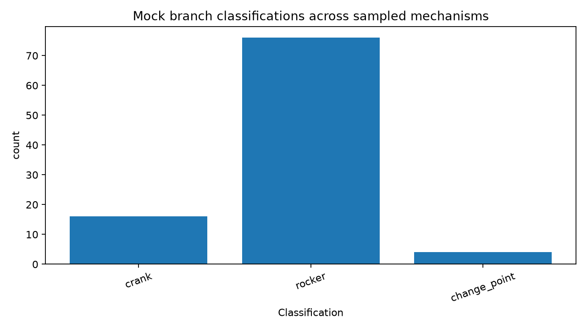

Focus: stand up the branch-result data model and generate first readouts that will later be filled by closure continuation and true winding calculations.

| Sample | Family | Tool axis | w_alpha | w_beta | class_alpha | class_beta | notes |
|---|---|---|---|---|---|---|---|
| uuur_000 | UUUR | a | 1 | 0 | crank | rocker | |
| uuur_001 | UUUR | a | 0 | 0 | rocker | rocker | |
| uuur_002 | UUUR | a | 0 | 0 | rocker | rocker | |
| uuur_003 | UUUR | a | 0 | 0 | rocker | rocker | near-planar center geometry |
| uuur_000 | UUUR | b | 0 | 1 | rocker | crank | |
| uuur_001 | UUUR | b | 0 | 1 | rocker | crank | |
| uuur_002 | UUUR | b | 0 | 0 | rocker | rocker | |
| uuur_003 | UUUR | b | 0 | 0 | rocker | rocker | near-planar center geometry |
| uuru_000 | UURU | a | 1 | 0 | crank | rocker | |
| uuru_001 | UURU | a | 0 | 0 | rocker | rocker | |
| uuru_002 | UURU | a | 1 | 0 | crank | rocker | near-planar center geometry |
| uuru_003 | UURU | a | 1 | 0 | crank | rocker | |
| uuru_000 | UURU | b | 0 | 0 | rocker | rocker | |
| uuru_001 | UURU | b | 0 | 0 | rocker | rocker | |
| uuru_002 | UURU | b | 0 | 1 | rocker | crank | near-planar center geometry |
| uuru_003 | UURU | b | 0 | 0 | rocker | rocker | |
| uruu_000 | URUU | a | 0 | 0 | rocker | rocker | near-planar center geometry |
| uruu_001 | URUU | a | 0 | 0 | rocker | rocker | |
| uruu_002 | URUU | a | 0 | 0 | change_point | change_point | near-planar center geometry |
| uruu_003 | URUU | a | 0 | 0 | rocker | rocker |